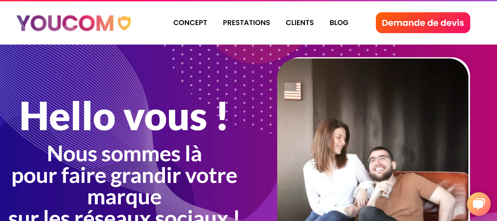

Qui suis-je ?
Je suis Tony Leva, actuellement en formation de développeur web.
J'ai pour vocation de travailler à mon compte plus tard, après avoir acquis de l'expérience,
bien sûr.
Avant de prendre goût au développement, j'ai travaillé dans plusieurs domaines : hotellerie,
btp, banque, centre d'appel...
Au final, j'ai fini par avoir l'envie de trouver quelque chose de plus définitif pour en
faire ma carrière. En faisant, des recherches sur les différents métiers gravitant autour
des domaines qui
me passionnent comme la technologie, les jeux vidéos et la création de manière générale, je
suis tombé sur la fiche métier du développeur web et je me suis posé cette question
essentielle : mais, comment fonctionne un site internet ?
C'est don en partant de cette question que j'ai commencé à apprendre le HTML en autodidacte
et que j'ai décidé de faire une première formation de 8 mois pour apprendre à coder un site
internet.
Partant de rien, je n'ai malheureusement pas pu avoir le titre professionnel car j'avais
encore trop de lacunes. J'ai donc repassé une année à faire des petits boulots en attendant
de trouve rune autre formation pour combler ces lacunes.
C'est ainsi que je début ma formation chez Webforce3 dans l'optique d'avoir le niveau
suffisant pour intégrer une entreprise pour y faire mes armes.
Mes expériences

Stage développement web chez Youcom
Un stage de six semaine réalisé au sein de l'agence de communication, Youcom. Durant ce stage, j'ai appris à développer des applications sans code via Bubble.io. J'y ai donc développé un calculateur de devis utilisé en interne dans l'agence pour faciliter cette étape des négociations avec les clients. J'ai également créé le début d'une application web de vente de portes et fenêtres sur mesure. Et pour finir, j'ai du mettre en place un module de chat en direct via un plugin à intégrer sur le site wordpress de l'agence directement.
Card title
Some quick example text to build on the card title and make up the bulk of the card's content.
Card title
Some quick example text to build on the card title and make up the bulk of the card's content.